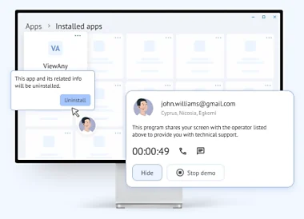

겟스크린미 한국총판
고객 화면에 바로 들어가는 원격지원
상담원은 설치 없이 웹 브라우저에서 바로 지원을 시작합니다. 사람이 없는 매장 키오스크, 공장 PC에도 상시 접속할 수 있습니다.
- 3 User / 연간 30만원
- 설치 없이 즉시 지원
- 무인기기 상시접속
상담원에게 코드를 받으셨나요? 원격지원 받기 363.co.kr
지원 운영체제
- Windows
- macOS
- Linux
- Android
- iOS
핵심 기능
원격지원에 필요한 기능, 웹 브라우저 하나로
고객 PC 1:1 지원부터 무인기기 관리까지, 상담원은 브라우저에서 모두 처리합니다.

웹에서 1:1 원격지원
상담원은 브라우저에서 초대를 보내고, 브라우저 안에 열린 고객 화면을 보며 제어합니다.
자세히
무인기기 상시접속
키오스크, 디지털 사이니지, POS처럼 사람이 없는 기기에도 언제든 접속해 점검합니다.
자세히
동시 지원 세션 무제한
여러 기기에 동시에 연결하고 오가며 지원합니다. Advanced는 상담원당 동시 지원 세션이 무제한입니다.
자세히
PC와 모바일 모두
Windows, macOS, 리눅스 PC와 서버, 안드로이드 기기를 원격으로 지원합니다.
자세히
고객사·부서별 그룹과 권한
기기를 팀, 그룹, 사용자 단위로 공유하고 담당자에게 필요한 접근 권한만 줍니다.
자세히 128비트 AES샌드박스 에이전트브라우저 기반 연결방화벽 변경 불필요VirusTotal 검증안전한 연결
128비트 AES 암호화와 샌드박스에서 도는 에이전트로 원격 세션을 보호합니다.
자세히연결 방법
처음 연결하는 고객도 세 단계면 됩니다
상담원이 초대를 보내면, 고객은 링크나 코드로 접속해 안내된 파일만 실행하면 됩니다.
 01상담원
01상담원초대 보내기
관리 패널에서 고객 초대를 만들고 이메일, 링크, 접속 코드 중 편한 방법으로 보냅니다.
 02고객
02고객링크나 코드로 접속
고객은 초대 링크를 열거나 접속 페이지에 코드를 입력하고, 안내된 접속용 파일을 실행합니다.

03상담원같은 화면을 보며 해결
고객 화면을 보며 원격으로 조치합니다. 채팅과 통화, 파일 전송도 같은 창에서 합니다.
활용 분야
출동하기 전에, 화면부터 확인하세요
현장 방문이 어려운 곳일수록 원격으로 먼저 진단하면 이동 시간이 줄어듭니다.
무인매장·키오스크
접속을 승인해 줄 직원이 없어도 상시 접속으로 매장 화면을 확인합니다.
POS·프랜차이즈 가맹점
프로그램 오류, 프린터 설정처럼 원격으로 풀리는 장애는 출동 없이 처리합니다.
공장 PC·MES·스마트팩토리
생산라인 PC를 원격으로 먼저 진단하고, 필요할 때만 현장에 갑니다.
ERP·SI·소프트웨어 고객지원
“제 PC에서만 오류가 나요” 같은 문의를 고객 화면을 보며 바로 확인합니다.
MSP·외주 IT 관리
여러 고객사 기기를 그룹으로 나누고 담당자별 권한으로 관리합니다.
병원 장비 유지보수
검사장비 PC처럼 방문이 어려운 장비를 원격으로 점검합니다.
디지털 사이니지
화면 꺼짐과 콘텐츠 송출 오류를 원격으로 구분하고 조치합니다.
다른 업종도 문의하세요
쓰는 프로그램과 원격 대상 기기를 알려 주시면 맞는 구성을 안내해 드립니다.
도입 문의블로그
원격지원 가이드
도입 전 비교 기준과 업종별 활용 방법을 블로그에 정리하고 있습니다.


지금 쓰는 원격지원, 비용부터 비교해 보세요
상담원 수와 원격 대상(고객 PC, 무인기기)을 알려 주시면 맞는 구성을 안내해 드립니다.